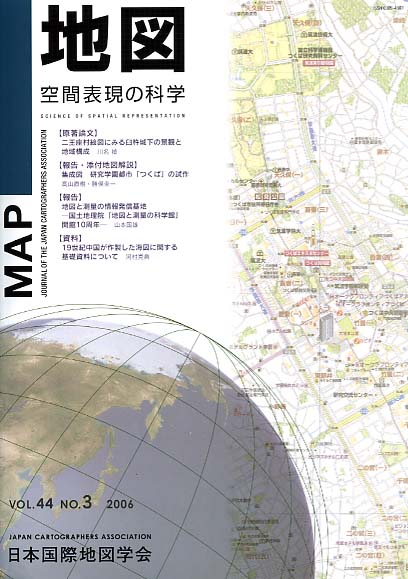

≪No.44 No.3 添付地図−抜粋≫

本図を許可なく複製・利用することを禁止します。
| 最 新 号 | バックナンバー | 添付地図目録 | 投 稿 規 程 |
Vol.44 No.3 （通巻１７５号） ２００６年
| 【原著論文】 | 二王座村絵図にみる臼杵城下の景観と地域構成 | 川名 禎 |
| キーワード：地押絵図、臼杵城下、地域制、武家屋敷 | ||
| 【報告・添付地図解説】 | 集成図 研究学園都市「つくば」の試作 | 高山直樹・勝俣圭一 |
| 【報告】 | 地図と測量の情報発信基地 −国土地理院「地図と測量の科学館」開館10周年− | 山本国雄 |
| 【資料】 | 19世紀中国が作製した海図に関する基礎資料について | 河村克典 |
| キーワード：19世紀、中国、海図、覆版、海道測量局 | ||
| 【ニュース】 | 伊能大図全図幅の高精細複製図集刊行 | 鈴木純子 |
| 【書評・紹介】 | 『日本の地形』全7巻の完成 | 長岡正利 |
| 【特別会員のページ】 | 国際航業株式会社 | |
| 北海道地図株式会社 | ||
| 【学会記事】 | ||
| 【添付地図】 | 研究学園都市「つくば」 | |
|
≪No.44 No.3 表紙≫ |
|
|  |
|
|
|
≪No.44 No.3 添付地図−抜粋≫ |
|
本図を許可なく複製・利用することを禁止します。 |